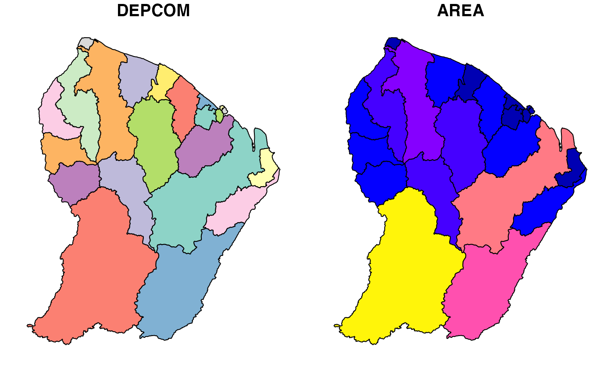
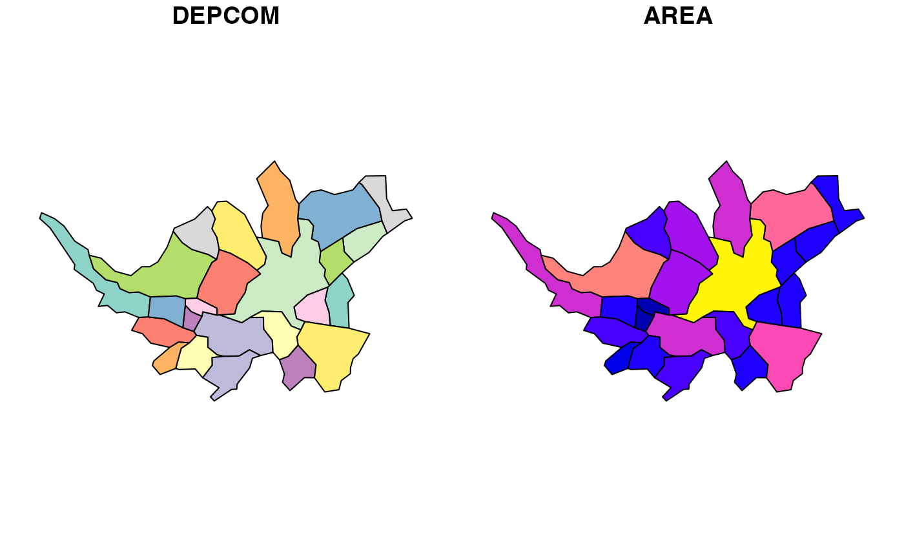
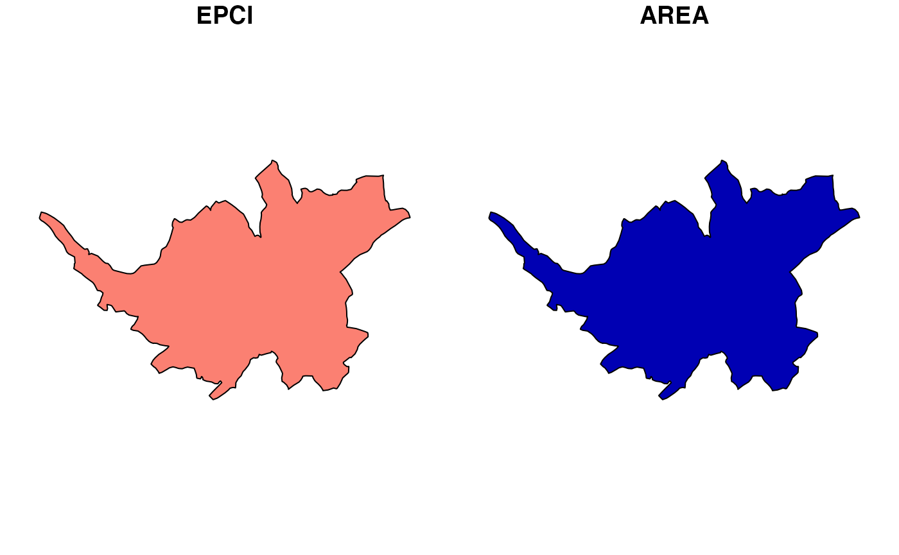
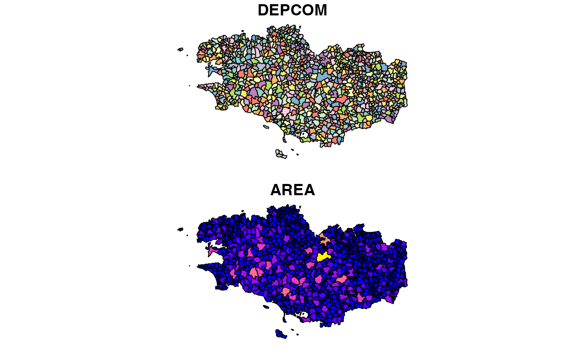
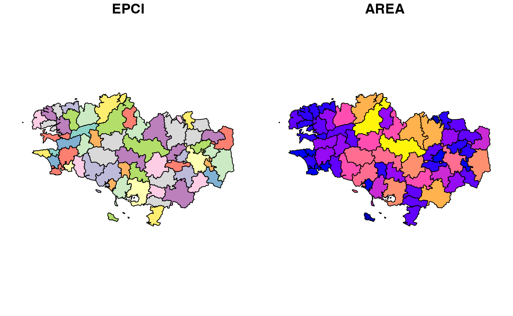
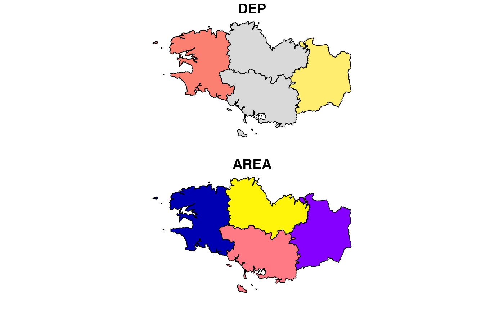
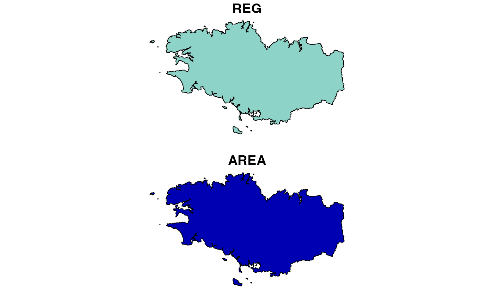
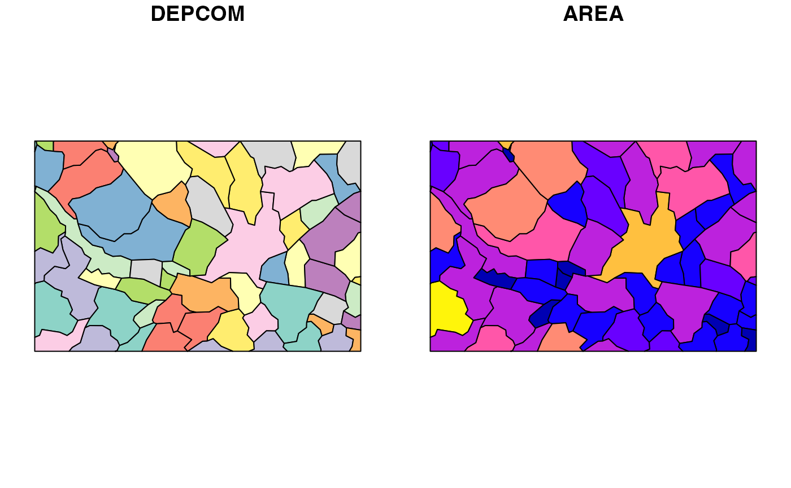
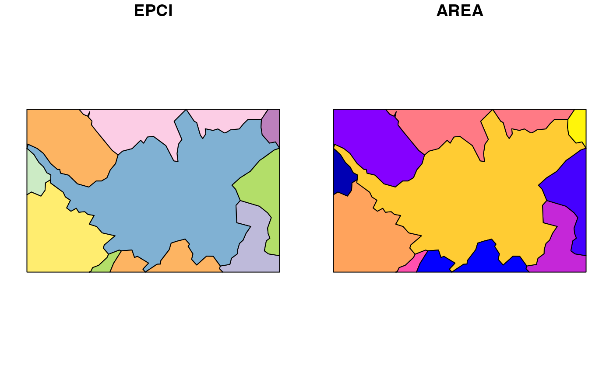

Ce document va vous permettre de comprendre comment COGiter vous permet de gérer les fonds de carte de France.
Il existe pour la métropole et chaque drom un fond de carte pour les niveaux communes, epci, départements, régions :
ls("package:COGiter", pattern = "_geo$")
#> [1] "communes_971_geo" "communes_972_geo" "communes_973_geo"
#> [4] "communes_974_geo" "communes_976_geo" "communes_geo"
#> [7] "communes_metro_geo" "departements_971_geo" "departements_972_geo"
#> [10] "departements_973_geo" "departements_974_geo" "departements_976_geo"
#> [13] "departements_geo" "departements_metro_geo" "epci_971_geo"
#> [16] "epci_972_geo" "epci_973_geo" "epci_974_geo"
#> [19] "epci_976_geo" "epci_geo" "epci_metro_geo"
#> [22] "filtrer_cog_geo" "regions_971_geo" "regions_972_geo"
#> [25] "regions_973_geo" "regions_974_geo" "regions_976_geo"
#> [28] "regions_geo" "regions_metro_geo"
plot(communes_973_geo)
filtrer_cog_geo() vous permet d’obtenir une liste de
spatial dataframe centrée sur une partie du territoire (que ce soit une
commune, un epci, un département ou une région).
Exemple sur Nantes métropole :
nantes_metropole <- filtrer_cog_geo(epci = "244400404")
dplyr::glimpse(nantes_metropole)
#> List of 2
#> $ communes: sf [24 × 3] (S3: sf/tbl_df/tbl/data.frame)
#> ..$ DEPCOM : chr [1:24] "44143" "44120" "44215" "44035" ...
#> ..$ AREA : Units: [m^2] num [1:24] 13780000 30650000 35680000 33420000 11660000 ...
#> ..$ geometry:sfc_POLYGON of length 24; first list element: List of 1
#> .. ..- attr(*, "class")= chr [1:3] "XY" "POLYGON" "sfg"
#> ..- attr(*, "sf_column")= chr "geometry"
#> ..- attr(*, "agr")= Factor w/ 3 levels "constant","aggregate",..: NA NA
#> .. ..- attr(*, "names")= chr [1:2] "DEPCOM" "AREA"
#> $ epci : sf [1 × 3] (S3: sf/tbl_df/tbl/data.frame)
#> ..$ EPCI : Factor w/ 1256 levels "200000172","200000438",..: 977
#> ..$ AREA : Units: [m^2] num 5.23e+08
#> ..$ geometry:sfc_POLYGON of length 1; first list element: List of 1
#> .. ..- attr(*, "class")= chr [1:3] "XY" "POLYGON" "sfg"
#> ..- attr(*, "sf_column")= chr "geometry"
#> ..- attr(*, "agr")= Factor w/ 3 levels "constant","aggregate",..: NA NA
#> .. ..- attr(*, "names")= chr [1:2] "EPCI" "AREA"nantes_metropole est une liste de deux spatial
dataframes communes et epci qui correspondent
aux deux niveaux de zoom possible sur la métropole.
plot(nantes_metropole$communes)
plot(nantes_metropole$epci)
On peut obtenir l’équivalent sur la région Bretagne, dans ce cas, la liste renvoyée contient également le fond de carte des départements et de la région :
bretagne <- filtrer_cog_geo(reg = "53")
dplyr::glimpse(bretagne)
#> List of 4
#> $ communes : sf [1,202 × 3] (S3: sf/tbl_df/tbl/data.frame)
#> ..$ DEPCOM : chr [1:1202] "29239" "29003" "22332" "22241" ...
#> ..$ AREA : Units: [m^2] num [1:1202] 6190000 18370000 8350000 73290000 40360000 ...
#> ..$ geometry:sfc_GEOMETRY of length 1202; first list element: List of 1
#> .. ..- attr(*, "class")= chr [1:3] "XY" "POLYGON" "sfg"
#> ..- attr(*, "sf_column")= chr "geometry"
#> ..- attr(*, "agr")= Factor w/ 3 levels "constant","aggregate",..: NA NA
#> .. ..- attr(*, "names")= chr [1:2] "DEPCOM" "AREA"
#> $ epci : sf [61 × 3] (S3: sf/tbl_df/tbl/data.frame)
#> ..$ EPCI : Factor w/ 1256 levels "200000172","200000438",..: 45 130 131 219 239 255 300 344 345 352 ...
#> ..$ AREA : Units: [m^2] num [1:61] 3.53e+08 3.52e+08 8.68e+08 7.39e+08 5.21e+08 ...
#> ..$ geometry:sfc_GEOMETRY of length 61; first list element: List of 1
#> .. ..- attr(*, "class")= chr [1:3] "XY" "POLYGON" "sfg"
#> ..- attr(*, "sf_column")= chr "geometry"
#> ..- attr(*, "agr")= Factor w/ 3 levels "constant","aggregate",..: NA NA
#> .. ..- attr(*, "names")= chr [1:2] "EPCI" "AREA"
#> $ departements: sf [4 × 3] (S3: sf/tbl_df/tbl/data.frame)
#> ..$ DEP : Factor w/ 101 levels "01","02","03",..: 21 28 36 57
#> ..$ AREA : Units: [m^2] num [1:4] 6.88e+09 6.73e+09 6.77e+09 6.82e+09
#> ..$ geometry:sfc_MULTIPOLYGON of length 4; first list element: List of 3
#> .. ..- attr(*, "class")= chr [1:3] "XY" "MULTIPOLYGON" "sfg"
#> ..- attr(*, "sf_column")= chr "geometry"
#> ..- attr(*, "agr")= Factor w/ 3 levels "constant","aggregate",..: NA NA
#> .. ..- attr(*, "names")= chr [1:2] "DEP" "AREA"
#> $ regions : sf [1 × 3] (S3: sf/tbl_df/tbl/data.frame)
#> ..$ REG : Factor w/ 18 levels "01","02","03",..: 13
#> ..$ AREA : Units: [m^2] num 2.72e+10
#> ..$ geometry:sfc_MULTIPOLYGON of length 1; first list element: List of 13
#> .. ..- attr(*, "class")= chr [1:3] "XY" "MULTIPOLYGON" "sfg"
#> ..- attr(*, "sf_column")= chr "geometry"
#> ..- attr(*, "agr")= Factor w/ 3 levels "constant","aggregate",..: NA NA
#> .. ..- attr(*, "names")= chr [1:2] "REG" "AREA"
plot(bretagne$communes)
plot(bretagne$epci)
plot(bretagne$departements)
plot(bretagne$regions)
l’option garder_supra permet de ne pas simplement
filtrer mais de centrer la bbox des cartes sur le territoire, ce qui
permet de visualiser la carte des territoires voisins.
nantes_metropole <- filtrer_cog_geo(epci = "244400404", garder_supra = TRUE)
dplyr::glimpse(nantes_metropole)
#> List of 2
#> $ communes: sf [64 × 3] (S3: sf/tbl_df/tbl/data.frame)
#> ..$ DEPCOM : chr [1:64] "44014" "44203" "44143" "44084" ...
#> ..$ AREA : Units: [m^2] num [1:64] 27540000 1600000 13780000 45310000 19510000 ...
#> ..$ geometry:sfc_GEOMETRY of length 64; first list element: List of 1
#> .. ..- attr(*, "class")= chr [1:3] "XY" "POLYGON" "sfg"
#> ..- attr(*, "sf_column")= chr "geometry"
#> ..- attr(*, "agr")= Factor w/ 3 levels "constant","aggregate",..: NA NA
#> .. ..- attr(*, "names")= chr [1:2] "DEPCOM" "AREA"
#> $ epci : sf [10 × 3] (S3: sf/tbl_df/tbl/data.frame)
#> ..$ EPCI : Factor w/ 1256 levels "200000172","200000438",..: 384 399 415 631 690 977 978 980 982 983
#> ..$ AREA : Units: [m^2] num [1:10] 5.22e+08 3.10e+08 2.76e+08 3.54e+08 3.06e+08 ...
#> ..$ geometry:sfc_GEOMETRY of length 10; first list element: List of 1
#> .. ..- attr(*, "class")= chr [1:3] "XY" "POLYGON" "sfg"
#> ..- attr(*, "sf_column")= chr "geometry"
#> ..- attr(*, "agr")= Factor w/ 3 levels "constant","aggregate",..: NA NA
#> .. ..- attr(*, "names")= chr [1:2] "EPCI" "AREA"
plot(nantes_metropole$communes)
plot(nantes_metropole$epci)